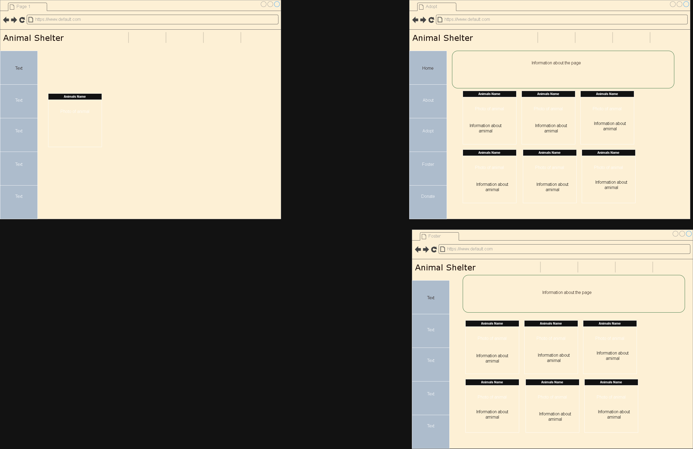

Project Overview
This application will be an animal shelter site for Paws & Hearts to help connect potential owners with stray puppies. The mission of Paws & Hearts is The mission of Paws & Hearts is to rescue, rehabilitate, and rehome dogs in need, giving them a second chance at a safe and loving life. We are dedicated to connecting every pup with a caring home while inspiring compassion within our community. The intended users are those looking to adopt pets in Oregon. What makes our shelter stand out is our commitment to being a no kill, community driven organization that gives every dog the time, care, and second chance they deserve. We also focus on rescuing at risk and overlooked dogs, including those from neglect, abandonment, or urgent situations, and matching them with loving, lasting homes. The content of the website will include pet adoption, links to outside resources, and a more unique/colorful layout to grasp readers attention. Common layout such as 24PetConnect are hard to engage with, with different use of capitalization and photo size.
Client Information
- Name: Raey
- Organization: Paws & Hearts
- Email: raey@pawsandhearts.org
- Phone: (704) 555-1287
Website Information
- Home page: Paws & Hearts Animal Shelter
- Nav Bar: Vertical
- Interactivity using JavaScript/jQuery: Using a mouse for hover effects and click interactions
- Query-UI widget and other plugins: Using a carousel plugin to display multiple pet photos in a slideshow format
- AJAX functionality: Implementing AJAX for dynamic content loading and form submissions
WireFrame Example

Site Map

Home Page Layout
- Purpose of the page: Introduce the shelter, highlight adoptable dogs, and guide visitors to other important sections like Adopt and Donate.
- Audience/Users of page: General visitors, potential adopters, donors, volunteers.
- Content of the page: Hero image with logo and tagline, featured adoptable dogs, quick links to Adopt, Donate, and Contact pages, testimonials or success stories.
- User data entry: Newsletter email
- Data validation: No
- Buttons/links/drop-downs: navigation menu links.
- Actions on the page: Clicking buttons navigates to respective pages; newsletter sign-up submits email via form submission.
About Page
- Purpose of the page:Provide background about the shelter, mission, vision, and team.
- Audience/Users of page: General visitors, donors, volunteers.
- Content of the page: Shelter history, mission statement, staff/volunteer highlights, photos of events or rescued dogs.
- User data entry: No
- Data validation: N/A
- Buttons/links/drop-downs: Navigation menu links, optional links to external partner sites or social media.
- Actions on the page: Clicking links navigates to external pages or internal sections.
Contact Page
- Purpose of the page: Allow visitors to reach the shelter for inquiries, volunteering, or reporting lost/found pets.
- Audience/Users of page: General public, potential adopters, donors, volunteers.
- Content of the page: Contact form (name, email, message), shelter address, phone number, email, map embed (optional)
- User data entry: name, email, message.
- Data validation: Validate email format, required fields (name, message).
- Buttons/links/drop-downs: Submit button for form, navigation menu links.
- Actions on the page: navigation links take users to other pages.
Adopt Page
- Purpose of the page: Display available dogs for adoption and allow users to express interest or apply.
- Audience/Users of page: Potential adopters.
- Content of the page: List/grid of adoptable dogs with photos, breed, age, size, description, and “Adopt Me” button.
- User data entry: Yes, adoption inquiry form or application.
- Data validation: Validate email, phone number, required fields (name, address, reason for adopting).
- Buttons/links/drop-downs: Adopt Me buttons
- Actions on the page: Clicking “Adopt Me” opens form; filtering updates displayed dogs.
- Special notes: Include image gallery
Donate Page
- Purpose of the page: Allow users to contribute financially to support the shelter.
- Audience/Users of page: Donors, supporters of the shelter.
- Content of the page: Three tiers of donations $25 $50 $100.
- User data entry: Yes, donation amount.
- Data validation: Required fields (amount, email, payment info), proper email format, numeric validation for donation amount.
- Buttons/links/drop-downs: Submit/Donate button, navigation menu links.
- Actions on the page: Confirmation message.
Dynamic Functionality
- JavaScript/jQuery interactivity: Creation of a dark mode and light mode option on the site. This will allow the site to be more accessible to individials with light sensitivity and also provide a more modern and engaging user experience. Example: Dark Mode Example
- Query-UI widget and other plugins: Use a carousel plugin on the home page to showcase featured dogs in a slideshow format. Example: Carousel Example
- AJAX functionality: Implement AJAX for dynamic content loading on the Adopt page when filtering dogs by breed or age, and for submitting the contact form without reloading the page. Example: AJAX Example